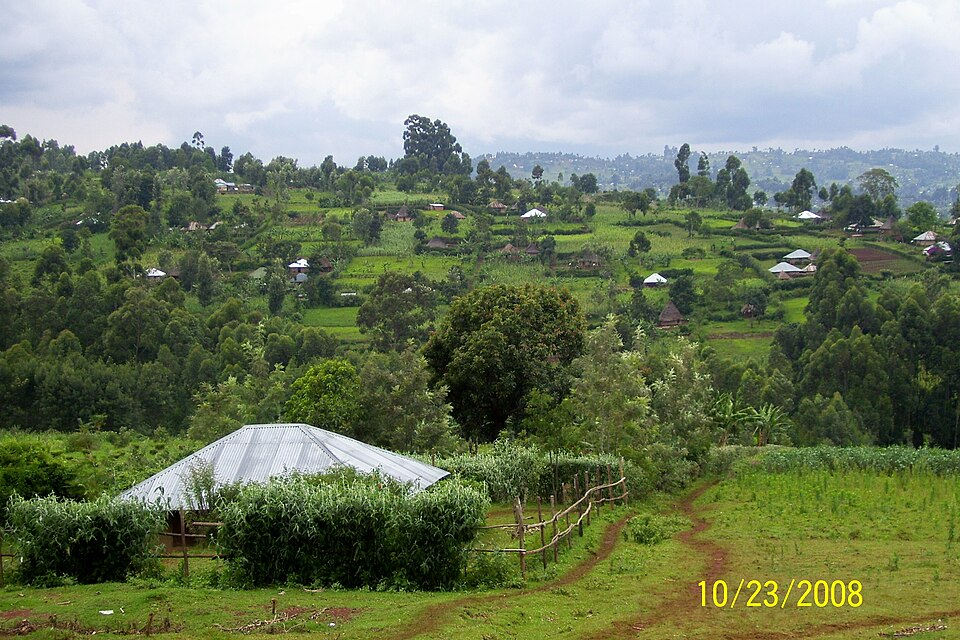
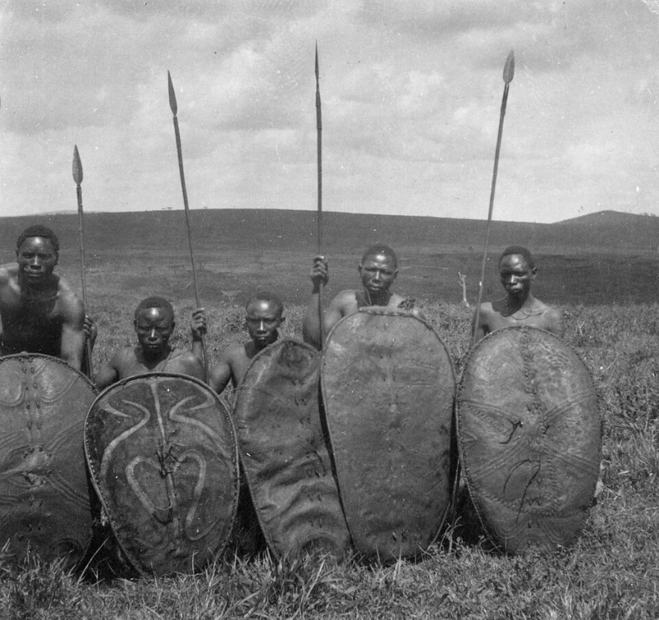
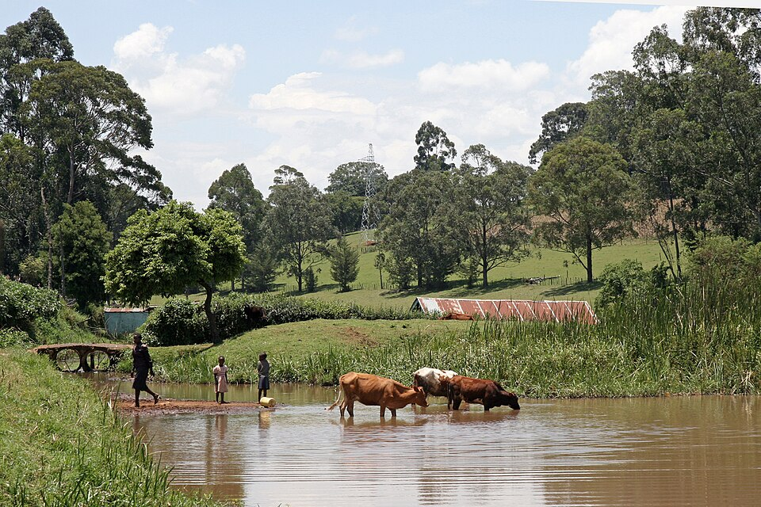

Nyamira County · 02
The Abagusii
Green hills, soapstone and a culture shaped by memory and the generous earth.
A living profile
Guardians of the green hills
Explore the Abagusii story through language, agriculture, family networks and craft.
HeartlandKisii & NyamiraWestern Kenya highlands
LanguageEkegusiiA tonal Bantu language
LivelihoodsTea & food cropsBananas, maize and smallholder farming
CraftSoapstoneCarving, sculpture and household objects



The Gusii language, oral tradition and soapstone artistry connect everyday life to a deep sense of place. The names Abagusii and Kisii are used in different contexts for the same community.
What to explore
Read the hills as an archive of cultivation, family and skilled making.
- Tea-growing landscapes around Nyamira and Kisii
- Soapstone carving as a living creative practice
- Family networks, elders and oral history